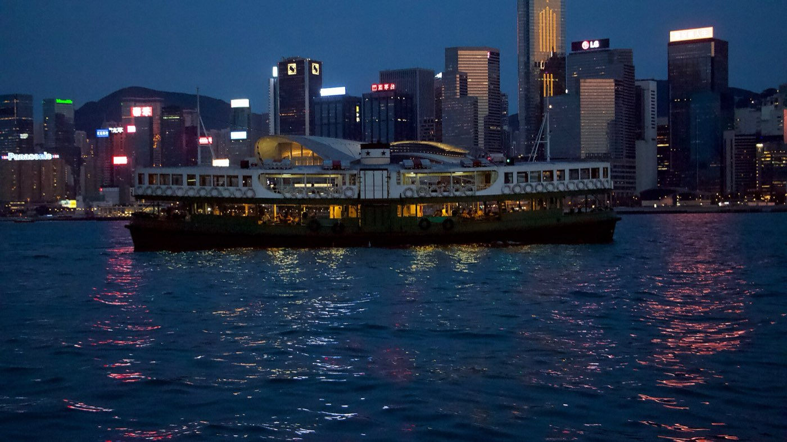
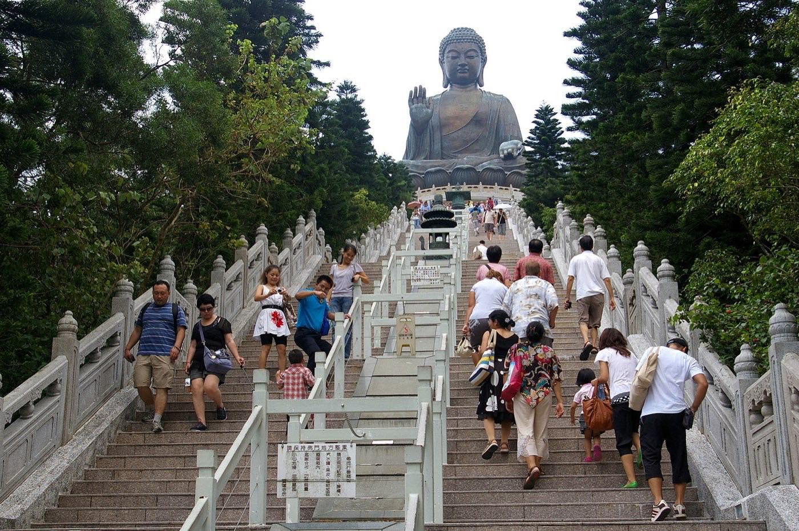

Hong Kong · 3 days
3 Days in Hong Kong: What You Actually Have to See
Hong Kong doesn't spread out, it stacks up. The harbour sits at sea level and the city's best-known view sits 428 meters above it, reached by a funicular that's been hauling people up Victoria Peak since 1888. Getting from the water to that summit, and then across the water to a second landmass entirely, is what actually organizes three days here, not the distance between addresses. The Central–Mid-Levels Escalator, the longest outdoor covered escalator system in the world, only runs one direction at a time and flips on a fixed schedule, so arriving on the wrong side of 10:20am wastes the point of it. The Peak Tram's queue balloons without a booked ticket. The Star Ferry across Victoria Harbour isn't even the fastest crossing, the MTR undercuts it by a few minutes, but it's the one built for the view. And Lantau's Big Buddha is reachable only by going up, cable car or bus, with the cable car itself grounded by wind or fog often enough to plan a fallback. Here's the shape that follows from all of that, and what to book before landing.

Most cities that dictate a trip's order do it with a calendar: a market day, a closing time, a booking window. Hong Kong does it with topography and a harbour. Central and the Mid-Levels above it are connected by a single escalator spine, and unlike a normal escalator it only moves one way at a time: downhill from 6am to 10am so commuters can get to the waterfront for work, then uphill from 10:20am to midnight once that flow reverses, with a 20-minute pause in between to switch direction. Ride it at the wrong hour and it's either walking against a moving handrail or taking the stairs beside it, which mostly defeats the reason to use it. The Peak Tram, the funicular that climbs from Garden Road up to the Sky Terrace 428 viewing deck, doesn't reverse direction on a clock, but its queue does something similar: walk-up lines on a busy afternoon can run past 90 minutes, while a ticket bought online skips straight to the platform.
The harbour crossing works on its own honest logic. The MTR tunnel between Central and Tsim Sha Tsui is genuinely a few minutes faster than the Star Ferry, so anyone optimizing purely for time should take the train. The ferry earns its fare a different way: it's cheaper than a harbour cruise, it's been running the same route since 1888, and it puts a rider on the water at the exact hour Victoria Harbour's nightly light show starts. Lantau Island, across the water in the opposite direction from Kowloon, adds a third kind of vertical problem. The Tian Tan Buddha sits above Ngong Ping village, and short of the 268-step staircase, the only way up is the Ngong Ping 360 cable car, which grounds in strong wind, thunderstorms or heavy fog, most often during the June-to-September typhoon season. There's a bus alternative, but it takes an extra twenty minutes and gets crowded fast on the days the cable car is down. None of this is exotic. It's just a city where elevation and water, not blocks and street names, decide what order things happen in.
Elevation and a harbour crossing set the order, not distance. The Central–Mid-Levels Escalator only runs one direction at a time and reverses at a fixed hour, the Peak Tram's queue balloons without a booked ticket, the Star Ferry is the scenic crossing rather than the fast one, and the cable car up to Lantau's Big Buddha grounds in wind or fog often enough to need a backup plan. This itinerary rides each of those clocks instead of fighting them.
Day 1 — Sheung Wan on foot, then up through the Mid-Levels to the Peak
Start at street level while the escalator is still running downhill. Man Mo Temple, on Hollywood Road in Sheung Wan, opens at 8am and is at its calmest in the first hour, its coiled incense spirals still unlit and the hall nearly empty. It's free to enter and takes maybe twenty minutes to see properly. From there, wander east along Hollywood Road toward PMQ, the former Police Married Quarters turned design market, browsing at street level rather than fighting the escalator's downhill flow.
By 10:20am the escalator has flipped to run uphill, and that's the cue to get on it. Ride it up through SoHo, where the covered sections pass directly over Staunton Street and Elgin Street's restaurant rows, and continue to its top near Conduit Road in the Mid-Levels. The full length takes 20 to 25 minutes end to end if ridden straight through, though most people get off partway to eat or browse. From the top, it's a 10-to-15-minute walk or a short taxi ride down to the Peak Tram's lower terminus on Garden Road.
Book the Peak Tram online before arriving, ideally a Sky Pass covering both the tram and the Sky Terrace 428 viewing deck. Walk-up queues on a clear afternoon can run past 90 minutes; a pre-booked ticket skips to a fast-track line instead. The tram itself dates to 1888 and climbs at a steep enough angle that the buildings outside the window appear to lean. From the Sky Terrace, 428 meters up, the view stretches across Victoria Harbour to Kowloon on a clear day. Ride the tram back down in the late afternoon and spend the evening in SoHo, back at street level, for dinner.
The must-sees
Time this around the escalator's 10:20am switch to uphill.
Day 2 — Across the harbour by ferry, then the light show and Temple Street after dark
Cross to Kowloon on the Star Ferry rather than the MTR. The subway is a few minutes quicker, but the ferry costs a fraction of a harbour cruise and delivers the same open-water view of the skyline that's been the point of this crossing for over a century. Boats run every few minutes between roughly 6:30am and 11:30pm, so there's no schedule to plan around beyond picking a daylight hour for the first crossing.
Spend the afternoon along the Tsim Sha Tsui promenade: the Avenue of Stars, Kowloon Park a short walk inland, and the waterfront itself, which fills in steadily as the afternoon wears on. At 8pm, A Symphony of Lights runs along both sides of the harbour, a roughly ten-minute sound-and-light show synced to music, visible for free from the promenade and, weather permitting, running nightly. Watching from the water on a dedicated cruise is an option, departing Central around 7:15pm or Tsim Sha Tsui around 7:55pm, but the promenade view costs nothing and is arguably the better vantage point for photographing the skyline itself rather than the show.
After the lights finish, walk or take one MTR stop north to Yau Ma Tei for Temple Street Night Market. Stalls officially open around 2pm but most don't set up until 4pm, and the market doesn't really start until 6pm, running loudest between roughly 7pm and 10pm before thinning out toward its nominal midnight close. This is deliberately the last stop of the day: it's a market built for after-dark browsing and street food, not for daylight.
The must-sees
The harbour crossing sets the day's pace; everything after dark is deliberate.
Day 3 — Lantau Island: the Big Buddha, up and then down to Tai O
Check the weather before leaving. The Ngong Ping 360 cable car runs 10am to 6pm on weekdays and 9am to 6:30pm on weekends and public holidays, with the last cabin down at closing and boarding cut off half an hour earlier, but it suspends service in strong wind, thunderstorms or heavy fog, which shows up most often during the June-to-September typhoon season. If it's running, book online and go early; if it's grounded, or the queue for it is already long, bus 23 from the Tung Chung bus terminus covers the same route in about 50 minutes and runs every 15 to 20 minutes, with extra services added specifically on days the cable car is down.
Either way up, the goal is Tian Tan Buddha, reached from Ngong Ping village by a staircase of 268 steps. The Buddha's platform is open 10am to 5:30pm daily, and Po Lin Monastery at its base is worth the short extra walk. Mornings are calmer than afternoons, when tour groups from cruise ships tend to arrive in bulk.
From Ngong Ping, bus 21 runs to Tai O, the old fishing village on Lantau's western edge, in about 30 minutes. Tai O's stilt houses, built out over the tidal flats and still inhabited, are the reason to make the trip; a 20-minute boat ride along the Tai O River gets close to them from the water, and simply walking the village's boardwalks does almost as well for free. Head back toward Tung Chung and the city in the late afternoon, since Lantau's transport thins out well before Kowloon's does.
The must-sees
Check wind and fog before committing to the cable car; bus 23 is the fallback.

What to book, and how far ahead
| What | Booking window | So |
|---|---|---|
| Peak Tram (Sky Pass or Fast Track) | Online, any time before arrival | Walk-up queues pass 90 minutes on clear afternoons |
| Central–Mid-Levels Escalator | No booking; runs one direction at a time | Uphill only from 10:20am–midnight; downhill 6am–10am |
| Ngong Ping 360 cable car | Online for fast-track; check the weather that morning | Suspends in wind, storms or fog, mainly June–September |
| Bus 23 (Tung Chung–Ngong Ping) | No booking, every 15–20 minutes | The cable car's weather backup; about 50 minutes |
| Star Ferry | No booking, every few minutes, 6:30am–11:30pm | Slower than the MTR but the only crossing built for the view |
| A Symphony of Lights | No booking for the free 8pm promenade show | Book the harbour cruise (7:15pm Central / 7:55pm TST) only for a water-level view |
What three days does not cover
Cutting deliberately beats rushing. These need more time than this trip's shape has room for:
- Hong Kong Disneyland or Ocean Park — either is a full day on its own, self-contained schedule, and neither fits alongside a day already built around Lantau.
- A loop of the outlying islands beyond Lantau — Cheung Chau and Lamma each reward a full day of their own, and this trip has already spent its one outlying-island day getting to the Buddha and Tai O.
- The Hong Kong Museum of History and the Science Museum — both worth an afternoon, but Day 2's daylight hours are already committed to the promenade and its evening to the light show and the market.
- Sham Shui Po's street markets and cha chaan teng cafes — genuinely worth a detour, but there's no obvious gap once the escalator's reversal, the Tram booking and the cable car's weather window are already setting the schedule.
Common questions about 3 days in Hong Kong
Is 3 days enough for Hong Kong?
For the essentials, yes. Three days covers Man Mo Temple and the Central–Mid-Levels Escalator, Victoria Peak, a Star Ferry crossing with the harbour light show, Temple Street Night Market, and a full day on Lantau for the Big Buddha and Tai O. It doesn't stretch to Disneyland or Ocean Park, the other outlying islands, or a proper look at Sham Shui Po, each of which needs time this itinerary has already committed elsewhere.
What time does the Central–Mid-Levels Escalator change direction?
It runs downhill from 6am to 10am, pauses for about 20 minutes to switch over, then runs uphill from 10:20am until midnight. It only moves one direction at a time, so riding it up to PMQ and the Mid-Levels only works after 10:20am; arrive earlier and it's still worth walking the route at street level.
Do I need to book Peak Tram tickets in advance?
Not strictly, but it's worth it. The tram runs without reservations, but walk-up queues at the lower terminus can pass 90 minutes on a clear afternoon. A Sky Pass or Fast Track ticket bought online skips straight to a separate line and costs less than the on-site fare.
What happens if the Ngong Ping cable car is closed for weather?
Bus 23 from the Tung Chung bus terminus covers the same route to Ngong Ping village in about 50 minutes, running every 15 to 20 minutes with extra services added on days the cable car is suspended. The cable car itself grounds in strong wind, thunderstorms or heavy fog, most commonly during the June-to-September typhoon season.
Is the Star Ferry faster than the MTR across the harbour?
No. The MTR crossing between Central and Tsim Sha Tsui is a few minutes quicker. The Star Ferry is worth taking anyway because it costs a fraction of a harbour cruise, runs every few minutes from 6:30am to 11:30pm, and puts a rider on the water for the same view the crossing has sold since 1888.
What time is A Symphony of Lights and where's the best place to watch it?
The show runs nightly at 8pm, weather permitting, for about ten minutes, lighting up buildings on both sides of Victoria Harbour in sync with music. It's free to watch from the Tsim Sha Tsui promenade, which also gives the better angle for photographing the skyline itself; a dedicated harbour cruise departs Central around 7:15pm and Tsim Sha Tsui around 7:55pm for those who want to watch from the water.
Tailored to your trip
Travelling to Hong Kong? Plan your trip around your real arrival and departure times.
Download iOS App